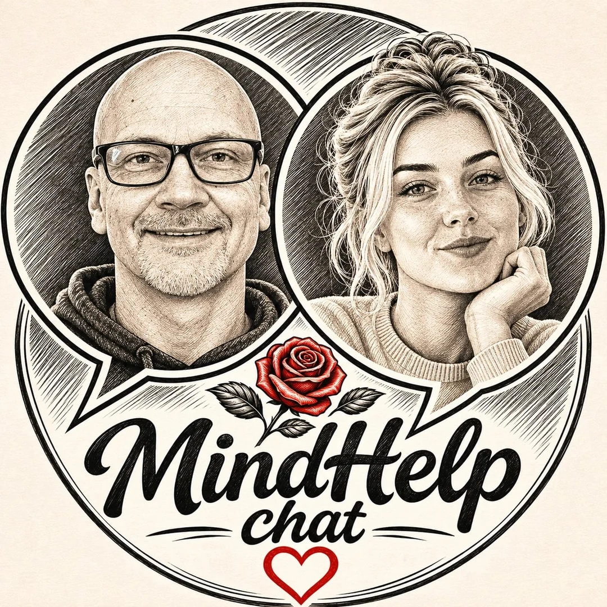

Życie po pięćdziesiątce
Nowe możliwości, nieoczekiwane zakręty i odwaga, by dalej być sobą.
Rozmowy o życiu, bez zbędnych masek.
O tym, co nas porusza, łączy i czasem zatrzymuje. Z dystansem, uważnością i odrobiną humoru. Poznaj rozmowy Dariusza i Leny.
Nowe spojrzenie na codzienne sprawy

Dlaczego MindHelp Chat?
Nie mamy gotowej recepty na życie. Chcemy za to rozmawiać o sprawach, które naprawdę dotyczą ludzi: o zmianach, relacjach, emocjach, samotności, nadziei i zaczynaniu od nowa.
Łączymy doświadczenie życiowe z nowym spojrzeniem. Nie zawsze musimy się ze sobą zgadzać — ważne, że potrafimy słuchać.
„Nie każdy nowy rozdział zaczyna się wtedy, kiedy tego oczekujemy.”
Tematy, które łączą
Życie nie mieści się w jednej kategorii. Wybieramy tematy, w których można odnaleźć kawałek własnej historii.
Nowe możliwości, nieoczekiwane zakręty i odwaga, by dalej być sobą.
Co nas łączy, dzieli i czego uczymy się o sobie nawzajem.
Kiedy życie pisze inny scenariusz niż ten, który mieliśmy w głowie.
Doświadczenia, refleksje i małe odkrycia z codzienności.
Obejrzyj nas
Na kanale MindHelpChat znajdziesz nasze krótkie formy i dłuższe rozmowy — o życiu, zmianach i tym, co warto w sobie pielęgnować.
Przejdź na YouTubePoznaj nasz duet
Doświadczenie spotyka technologię, a poważne tematy — swobodę rozmowy.
Prawdziwe doświadczenia, ciekawość ludzi i historie, które warto opowiedzieć. Czasem poważnie, czasem z przymrużeniem oka.
Człowiek + osobista perspektywaWirtualna współprowadząca oparta na AI. Zadaje pytania, wnosi nowe spojrzenie i pomaga prowadzić rozmowę w angażujący sposób.
Postać AI + druga perspektywaZostań z nami
Oglądaj, komentuj, dziel się własną perspektywą. MindHelp.chat to miejsce na historie, w których możesz odnaleźć także siebie.
Odwiedź nasz kanał